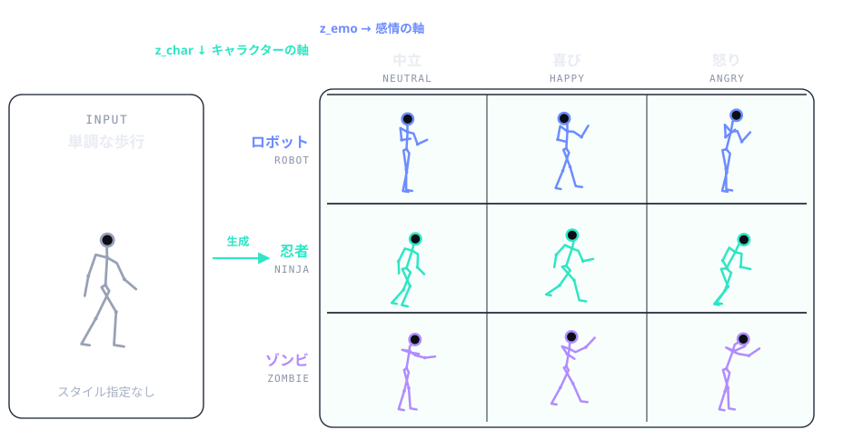

何を解こうとしているか
既存のモーションスタイル変換は、スタイルを1 つのまとまりとして扱います。 「怒っているゾンビ歩き」を作りたいとき、スタイルが 1 軸しかないと 「ゾンビらしさ」と「怒り」のどちらかしか指定できません。
しかしキャラクターに動きを与える立場で考えると、この 2 つは別々に制御したいものです。
同じキャラクターは感情が変わっても同一人物と分かる必要があり、
同じ感情は誰が演じても伝わる必要があるからです。
そこでスタイルを「キャラクター性 z_char」と「感情 z_emo」の 2 軸に分解し、
学習データに存在しない組み合わせでも生成できる枠組みを目指しました。

下図はその処理の流れです。動作内容とスタイル参照を別経路で受け取り、 参照クリップを差し替えるだけで組み合わせを変えられる構成になっています。
生成結果のデモ
学習したモデルで、指定した「動作内容 × キャラクター × 感情」のモーションを生成した様子です。 可視化ツールも自作しており、参照クリップを選び直すとその場で再推論して結果が切り替わります。
自作の three.js ビューアで生成結果を再生したもの
研究テーマ
キャラクター性と感情を
分離したモーション生成
2 軸分離の定式化、モデル設計、学習が破綻した原因の特定と対策、 自作の定量評価指標まで。研究の中身をいちばん詳しく書いています。
強化学習と sim-to-real
による実機ロボット制御
四足ロボット Unitree Go2 の歩行方策を強化学習で獲得し実機へ展開。 ヒューマノイド全身制御のシミュレーション環境構築も含みます。
リハビリ機器の改修と
訓練支援ゲーム
脳卒中患者向け上肢訓練機器のシステム改修と機械的評価、 訓練を継続したくなる体験設計への取り組み。
研究基盤
研究を進めるうえで必要な学習データ・計算環境・可視化ツールは、既存のものに頼らず自分で整えています。 試行回数を増やせる状態を作ること自体が研究の速度を決めるという考えからです。
- DATASETS
- キャラクター性・感情のラベルを持つ複数のモーションキャプチャデータセット（俳優・キャラクター別／感情別／スタイル別）を用途に応じて使用。 関節定義・フレームレート・座標系が異なるため、共通スケルトンへ揃える前処理を自作しています。
- REPRESENTATION
-
21 関節の統一スケルトンに正規化し、各フレームを「全関節位置＋回転＋ルート軌跡」の
151次元ベクトルで表現。 既存実装との数値一致（誤差1e-7未満）を検証してから研究に使っています。 - TRAINING
- 自宅の単一 GPU（16GB）で 30 万イテレーション規模の学習を運用。 TensorBoard への全損失記録、学習の自動レジューム、外部 PC へフォルダごと持ち出して学習を再開できるスクリプト群を整備しました。
- VISUALIZATION
- three.js の自作ビューアで、内容・キャラ参照・感情参照・生成結果を 4 面同時に再生。 潜在空間を PCA で可視化する画面、外部の BVH モーションを取り込んで入力にできる機能、 任意の 3D キャラクターへリターゲットして表示する機能も実装しています。
- EVALUATION
- 「見た目が自然か」を主観で判断せずに済むよう、評価指標とスクリプトを自作。 実データ分布からの逸脱、骨長の安定性、軌跡のドリフト、潜在空間のクラス内／クラス間分散などを数値で追跡しています。
研究を支える実装・環境構築
研究テーマそのものに加えて、先行手法を自分の環境で動かし比較できる状態を作る作業も継続して行っています。 いずれも制作物ページに詳細があります。